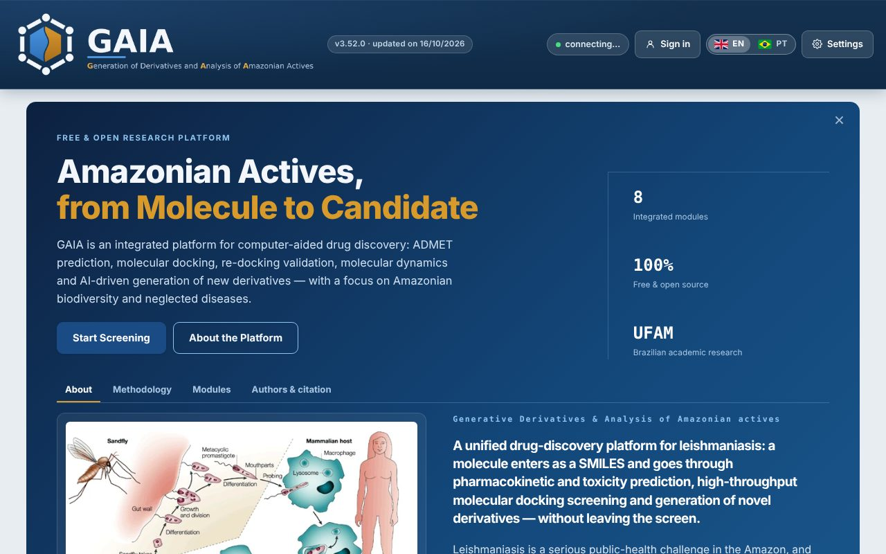
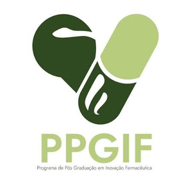
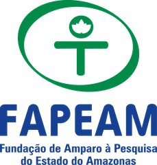
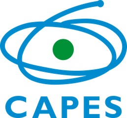

GAIA
Generative Derivatives & Analysis of Amazonian actives
A free academic in silico screening platform. A molecule enters as a SMILES and goes through validation, pharmacokinetic and toxicity prediction, molecular docking, molecular dynamics and derivative generation, focused on leishmaniasis and Amazonian biodiversity.
Checking whether the platform is online…
What GAIA is
Leishmaniasis is a serious public-health problem in the Amazon, and the region's biodiversity is a source of molecules that remain little explored. GAIA brings together, on one screen, the steps that usually need several separate tools: it checks the molecule, predicts its ADMET profile, simulates binding to the target and proposes novel derivatives, checking whether they already exist in public databases (PubChem, ChEMBL, ZINC). It is part of the PhD thesis of Douglas Emanuel Mota de Souza at the Graduate Program in Pharmaceutical Innovation (PPGIF), Faculty of Pharmaceutical Sciences, Federal University of Amazonas (UFAM).
The platform

Modules
Validation
Checks the SMILES, computes descriptors and Lipinski's rule of five.
ADMET
Predicts absorption, distribution, metabolism, excretion and toxicity (ADMET-AI).
QSAR
Relates pharmacokinetic descriptors to observed activity, comparing active and inactive molecules from the same assay.
Docking
Prepares ligand and receptor and runs AutoDock Vina, with automatic binding-site detection.
Re-docking
Validates the protocol: RMSD of the co-crystallized ligand against the X-ray pose.
Molecular dynamics
Simulates the docking pose in explicit water (OpenMM) and measures whether it holds.
Derivatives
Generates derivatives by rules, by fragments enriched in actives and by reinforcement learning, preserving the parent molecule, and checks novelty.
Retrosynthesis
SAscore, BRICS rule-based disconnections and, optionally, routes from AiZynthFinder or Spaya, with reagent checks.
Limitations, stated up front
- Prediction is not measurement. ADMET comes from a statistical model and docking affinity from an empirical scoring function; neither replaces an assay.
- Amazonian chemical space is poorly represented. The models were trained mostly on synthetic pharmaceutical-library compounds, so natural products of the Amazon, the object of this platform, are where they are least reliable.
- Rigid receptor. Docking treats the protein as rigid, which ignores induced fit.
- Novelty is relative to the databases queried. A derivative absent from PubChem, ChEMBL and ZINC may still exist elsewhere.
- Without internet, part of it does not run. The novelty check and some downloads depend on public databases.
Notice. Everything GAIA produces is a computational hypothesis. It does not replace in vitro or in vivo assays, and the platform is not a tool for clinical decisions.
Team
How to cite
Souza D.E.M., Oliveira M.D.L., Lins O.N.M.S., Guilhon-Simplicio F. GAIA, Geração de derivados e Análise Inteligente de Ativos Amazônicos: plataforma integrada de triagem virtual. Programa de Pós-Graduação em Inovação Farmacêutica, Universidade Federal do Amazonas, Manaus, Brasil.
BibTeX
@misc{gaia,
author = {Souza, D. E. M. and Oliveira, M. D. L. and Lins, O. N. M. S. and Guilhon-Simplicio, F.},
title = {{GAIA}: Gera\c{c}\~ao de derivados e An\'alise Inteligente de Ativos Amaz\^onicos},
note = {Plataforma integrada de triagem virtual. Programa de P\'os-Gradua\c{c}\~ao em Inova\c{c}\~ao Farmac\^eutica, Universidade Federal do Amazonas},
address = {Manaus, Brasil}
}Source code and access
GAIA's source code is not public yet. The platform can be used online, when the laboratory server is on, through the button at the top of this page. For collaboration or questions, contact the authors through the Lattes and ORCID profiles listed above.
Institutions and support


